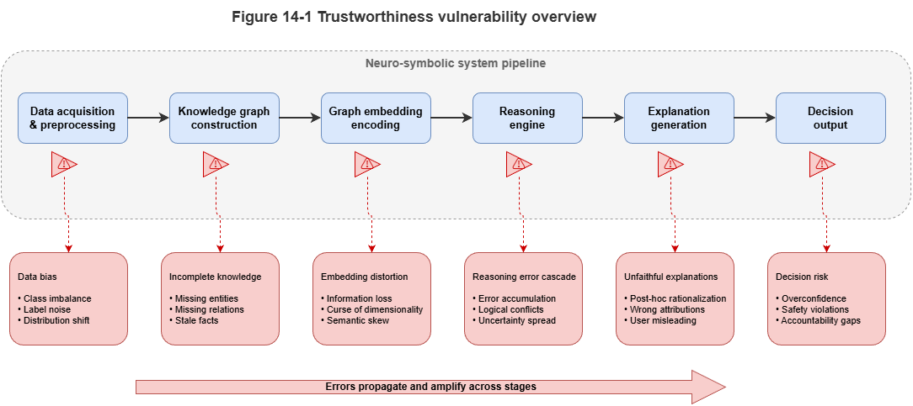
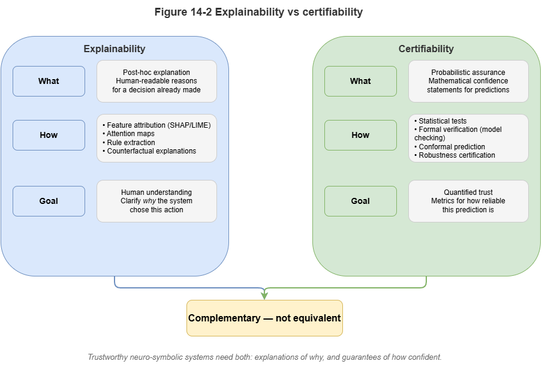
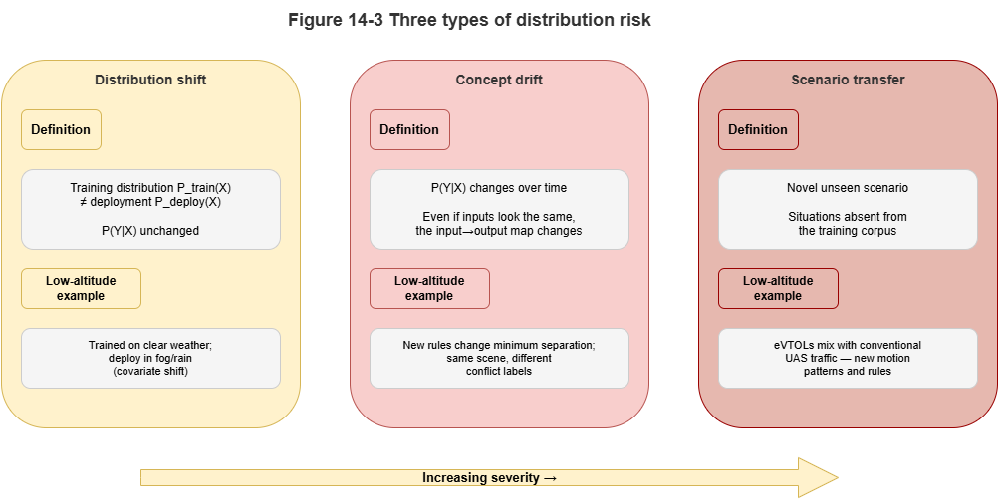

In the preceding parts of this book, we built a complete neuro-symbolic stack from static explainable cognition (Part III) to dynamic collaborative reasoning (Part IV). By combining the low-altitude traffic knowledge graph (SkyKG) with deep learning, the system exhibits strong perception and reasoning capabilities. Yet when we try to deploy such systems in safety-critical domains such as urban air mobility (UAM), they still face the ultimate question from airworthiness regulators: “Why should we trust it?”
As the opening chapter of the “Trustworthy Certification” part, this chapter aims to dispel the illusion that “adding symbolic logic means absolute safety,” systematically analyzes inherent weaknesses in the trustworthiness of neuro-symbolic systems, and clarifies the path from “empirical performance” to “certification-grade assurance.”
14.1 Why Neuro-Symbolic Systems Are Still Not Inherently Trustworthy#
Although neuro-symbolic AI injects prior knowledge and logical rules into models and greatly constrains the “free wandering” of neural networks, it does not possess inherent trustworthiness. The fundamental reason is that the system’s symbol grounding stage remains statistically driven.
In real physical systems, logical reasoning presupposes clear symbolic facts (e.g., “target A is 5 meters from the obstacle”). In neuro-symbolic systems, such “facts” are often produced by lower-level neural networks (e.g., vision models or radar point-cloud classifiers). If the neural network misperceives at the front end (e.g., classifying a bird as an intruding drone), then no matter how tight the downstream logical chain, the conclusion rests on sand (garbage in, garbage out). As long as the system contains gradient-based, hard-to-interpret tensor computation, it inevitably inherits the fragility of deep learning.
14.2 Explainability ≠ Certifiability#
In current AI governance discourse, explainability and certifiability are often conflated—a dangerously misleading equation.
Explainability focuses on whether humans can understand. As Chapter 10 described, explanation chains generated via large language models and the graph can tell an air traffic controller why the system made a decision. That is only retrospective cognitive support: the narrative may be coherent while the underlying reasoning is accidentally correct or even misleading.
Certifiability focuses on formal assurance in mathematics and statistics. Airworthiness certification (e.g., DO-178C for software) does not ask whether the model can tell a good story in natural language; it demands explicit error bounds, failure rates, and guarantees of worst-case behavior. A model that offers perfect explanations but fails in unpredictable ways cannot pass aircraft certification.
14.3 Black-Box Confidence and Overconfidence#
When neural networks output predictions, they often attach a probability (e.g., Softmax output “probability of collision 99.9%”). Modern deep models, however, commonly suffer from severe miscalibration, manifesting as overconfidence.
When the model encounters rare situations inconsistent with the training distribution (e.g., sensor data under extreme electromagnetic interference), it may not only misclassify or mispredict trajectories but also assign very high confidence to the wrong answer. Traditional neuro-symbolic arbitration may then trust the high score and skip invoking safe fallback rules. Uncalibrated probabilities must not drive decisions in safety governance.
14.4 Distribution Shift, Concept Drift, and Scenario Transfer#
Low-altitude traffic is an open, dynamic system; the world after deployment constantly evolves, challenging the usual learning assumption that train and test are i.i.d.:
Distribution shift: A model trained on summer weather may suffer a cliff-edge drop in accuracy in winter when air density and wind patterns change.
Concept drift: As new eVTOL types appear, the notion of “UAV dynamic constraints” changes in essence; rules in the graph about turn radius may no longer apply.
Scenario transfer: A collaborative collision-avoidance graph neural network validated in Shenzhen, if deployed in Chongqing with very different building density without generalization safeguards, may trigger frequent false alarms or misses.
14.5 Special Trustworthiness Requirements for Safety-Critical Systems#
Unlike e-commerce recommenders or chatbots, UAM, autonomous driving, and clinical decision support impose stringent requirements:
Extremely low acceptable failure probability: In civil aviation, catastrophic failure is often required on the order of \(10^{-9}\) per flight hour. High F1 on a test set alone cannot demonstrate compliance.
Deterministic graceful degradation: When perception fails or out-of-distribution (OOD) data appear, the system must detect this explicitly and fall back to hard-rule conservative modes (e.g., immediate hover or return to the nearest alternate).
Auditable responsibility boundaries: After an incident, certification tags in the graph must allow clear attribution to front-end sensor noise, KG rule gaps, or model generalization failure.
14.6 From Empirical Performance to Formal Assurance#
To bridge this gap, the R&D paradigm for neuro-symbolic systems must shift from chasing empirical performance to building formal guarantees.
We cannot stop at 98% accuracy on historical data; we need rigorous statements at inference time, e.g.: “Given the current airspace state, with 95% statistical assurance, the true trajectory of the target UAV over the next 10 seconds lies inside the predicted interval envelope.”
Moving from black-box point predictions to interval predictions with strict coverage is the bridge between modern AI and classical safety engineering. Chapters 15 and 16 will discuss conformal prediction and statistical monitoring to attach genuine “trust certificates” to neuro-symbolic outputs.
Chapter Summary#
This chapter addresses trustworthiness in neuro-symbolic systems and explains why “adding rules” does not imply “inherent trust.” First, front-end perception can still turn unstable, noisy, or wrong statistical judgments into downstream symbolic facts, so the whole system inherits neural fragility. Second, we separate explainability from certifiability: the former serves understanding, the latter mathematical and institutional assurance. Third, uncalibrated probabilities cause severe overconfidence and false security in high-risk settings. Fourth, distribution shift, concept drift, and scenario transfer show that deployment continuously erodes training-time assumptions; under safety-critical constraints these issues become demands for ultra-low failure tolerance, degradable operation, and accountable boundaries. Finally, the core shift is from empirical performance to formal assurance.
Key Concepts#
Symbol grounding error: Neural misperception causes downstream symbolic reasoning to rest on false facts.
Explainability vs. certifiability: Capabilities aimed at human understanding vs. formal trustworthy guarantees.
Overconfidence: Miscalibration where the model outputs very high confidence even when wrong.
Distribution shift: Statistical mismatch between deployment and train/validation environments.
Formal assurance: Bounds and safety claims via statistical or formal methods.
Exercises#
Why does an “explainable reasoning chain” not suffice to show the system is certifiable?
In neuro-symbolic systems, why is front-end perception error a critical weak point for overall trust?
If the system runs long under distribution shift, which layer of capability typically fails first?
Case Study#
Use a case of overconfident warnings under extreme weather: the front-end model confidently labels anomalous radar returns as a safe track; downstream symbolic reasoning yields a formally coherent but actually dangerous conclusion—showing that “explainable” and “trustworthy” are not the same.
Figure Suggestions#
Figure 14-1: Schematic of weak links in neuro-symbolic trustworthiness.

Figure 14-2: Distinction between explainability and certifiability.

Figure 14-3: Comparative view of distribution shift, concept drift, and scenario transfer.

Formula Index#
This chapter is conceptual; there are no core derivations.
Suggested index keywords: failure probability, overconfidence, distribution shift, degradation path, responsibility boundary.
References#
Arrieta, A. B., et al. (2020). Explainable Artificial Intelligence (XAI): Concepts, Taxonomies, Opportunities and Challenges toward Responsible AI. Information Fusion, 58, 82–115.
Amodei, D., et al. (2016). Concrete Problems in AI Safety. arXiv preprint arXiv:1606.06565.
Guo, C., Pleiss, G., Sun, Y., & Weinberger, K. Q. (2017). On Calibration of Modern Neural Networks. Proceedings of the 34th International Conference on Machine Learning (ICML).
Doshi-Velez, F., & Kim, B. (2017). Towards a Rigorous Science of Interpretable Machine Learning. arXiv preprint arXiv:1702.08608.
Rudin, C. (2019). Stop Explaining Black Box Machine Learning Models for High Stakes Decisions and Use Interpretable Models Instead. Nature Machine Intelligence, 1(5), 206–215.
Hendrycks, D., & Dietterich, T. (2019). Benchmarking Neural Network Robustness to Common Corruptions and Perturbations. International Conference on Learning Representations (ICLR).